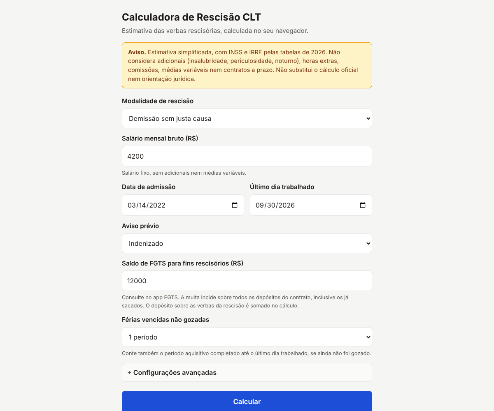
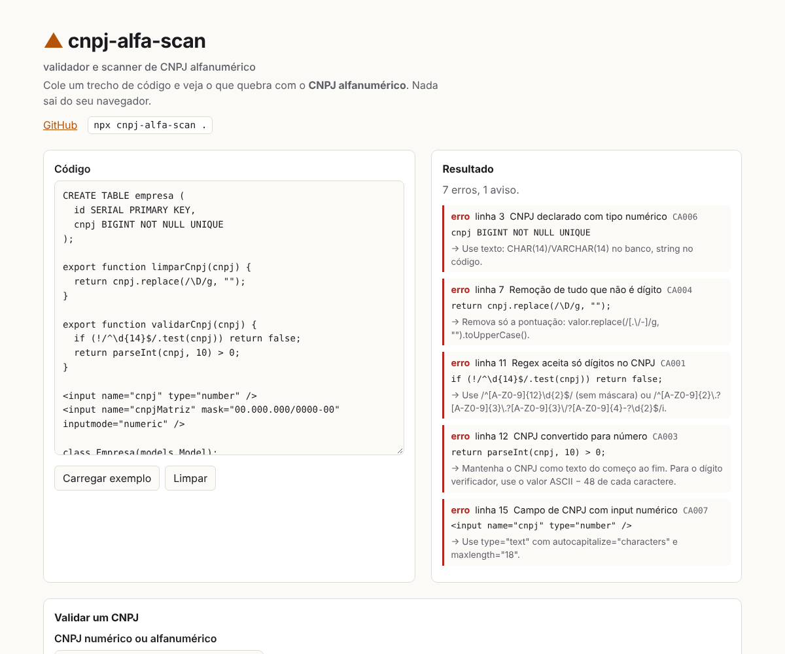

nokudos
Turns a Strava or Garmin data export into a year in review: every route drawn on one map, totals, personal bests from the GPS tracks, and a card to post.
I write code for pretty much anything that compiles. Most of what ends up here runs in your browser and reads your files on your own machine, so there is nothing to sign up for and nothing to upload.
Open the page, drop a file, done. Each one works offline after the first visit.
Turns a Strava or Garmin data export into a year in review: every route drawn on one map, totals, personal bests from the GPS tracks, and a card to post.

Reads the stats database of a Kobo or of KOReader and tells you what your reading year looked like: books finished, hours, streaks, the time of day you read.

Quanto você recebe ao sair do emprego, em todas as modalidades e no contrato de experiência, já com INSS e IRRF de 2026. Nenhum dado sai do navegador.

Brazil's CNPJ gets letters in July 2026, and a lot of code still stores it as a number. This finds the BIGINT columns, parseInt calls and \d{14} checks before they break.